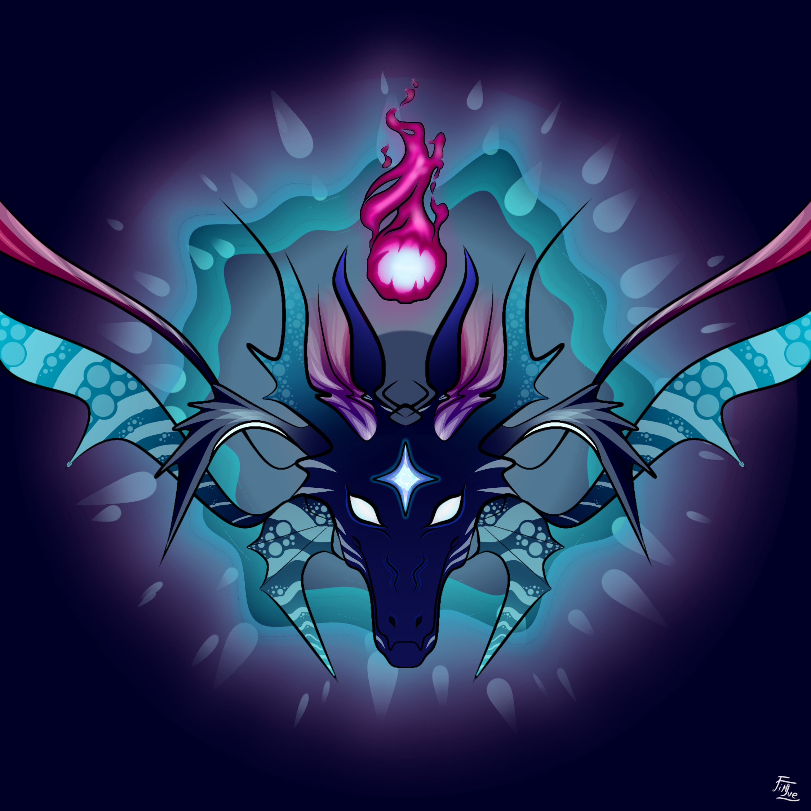

Draconink spirits
Line Up :
Karmabi
Jin-Lue
Djidow
NoeDX
Mirval
| Statistiques Générales | |||||||
|---|---|---|---|---|---|---|---|
| Joueur | Manches Gagnées | Manches Perdues | Kills | Assists | Morts | Points d'Encrages | Armes Spéciales |
| Karmabi | 18 | 5 | 133 | 46 | 76 | 27 075 | 74 |
| Jin-Lue | 18 | 6 | 188 | 44 | 158 | 21 385 | 36 |
| Djidow | 16 | 6 | 178 | 33 | 88 | 17 996 | 63 |
| NoeDX | 13 | 2 | 106 | 37 | 36 | 13 706 | 32 |
| Mirval | 7 | 5 | 112 | 20 | 72 | 12 609 | 34 |
| Draconink spirits | 18 | 6 | 717 | 180 | 430 | 92 771 | 239 |
| Pourcentages | ||||||||
|---|---|---|---|---|---|---|---|---|
| Joueur | Participation | Manches Gagnées | Manches Perdues | Kills | Assists | Morts | Points d'Encrages | Armes Spéciales |
| Karmabi | 95.8% | 78.3% | 21.7% | 18.5% | 25.6% | 17.7% | 29.2% | 31.7% |
| Jin-Lue | 100% | 75% | 25% | 26.2% | 24.4% | 36.7% | 23.1% | 13.7% |
| Djidow | 91.7% | 72.7%td> | 27.3% | 24.8% | 18.3% | 20.5% | 19.4% | 25.2% |
| NoeDX | 62.5% | 86.7% | 13.3% | 14.8% | 20.6% | 8.4% | 14.8% | 16.4% |
| Mirval | 50% | 58.3% | 41.7% | 15.6% | 11.1% | 16.7% | 13.6% | 13% |
| Draconink spirits | 100% | 75% | 25% | 100% | 100% | 100% | 100% | 100% |
| Moyennes | |||||
|---|---|---|---|---|---|
| Joueur | Kills | Assists | Morts | Points d'Encrages | Armes Spéciales |
| Karmabi | 5.78 | 2 | 3.3 | 1177.17 | 3.6 |
| Jin-Lue | 7.83 | 1.83 | 6.58 | 891.04 | 1.5 |
| Djidow | 8.1 | 1.5 | 4 | 818 | 3 |
| NoeDX | 7.07 | 2.47 | 2.4 | 913.73 | 2.87 |
| Mirval | 9.33 | 1.67 | 6 | 1050.75 | 2.83 |
| Draconink spirits | 29.88 | 7.5 | 17.92 | 3 865.46 | 10.92 |